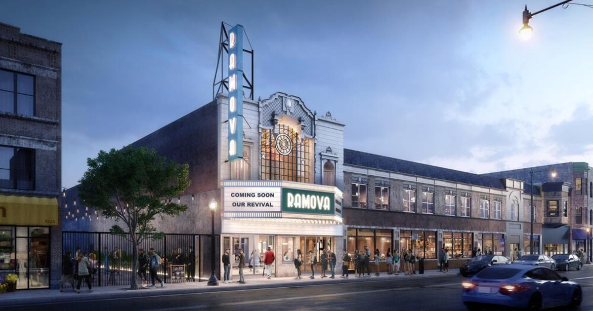

Chance the Rapper, Jennifer Hudson, and Quincy Jones join Ramova Theatre ownershipCHICAGO (CBS) -- A historic South Side theater is getting some star power ahead of its grand reopening. Jennifer Hudson, Chance the Rapper, and Quincy Jones will be co-owners of the revitalized Ramova Theatre in Bridgeport, along with investor Tyler Nevius, who bought the then-vacant theater and an adjacent lot from the city for $1 in 2017. The building at 32nd and Halsted streets was first built in 1929, but closed in 1985, sitting vacant for nearly 40 years, until Nevius bought the property with big plans for renovation. In 2022, the Chicago City Council approved $9.1 million in tax increment financing subsidies to help cover the costs of a $38 million renovation of the Ramova. The project has transformed the theater and the neighboring lot into a concert and dining complex; featuring a live music and entertainment venue with room for 1,600 people, a restaurant, and a brewpub. The renovated Ramova is set to reopen by the end of the year. for more features. |
 |